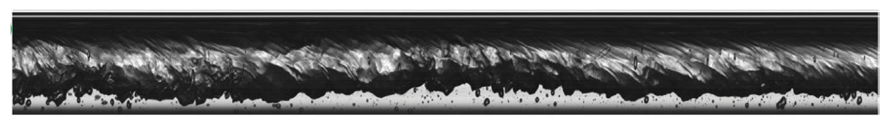

Efficient heat dissipation in high heat flux systems such as microelectronics, defence systems, and nuclear reactors is essential in order to prevent performance degradation and avoid possible system failure. For instance, it is important to prevent the breakdown in heat transfer performance, termed a "boiling crisis", that can occur when a solid surface becomes blanketed with vapour, or the "Departure from Nucleate Boiling" (DNB) phenomenon caused by merging of bubbles generated at a solid surface during boiling. The breakdown in heat transfer performance can also be caused by the occurrence of two-phase flow instabilities such as density wave oscillations (DWO), pressure drop oscillations (PDO) and thermal oscillations (THO). These phenomena are of interest for the design, operation and safety of boiling nuclear reactors and refrigeration plants. Unfortunately, understanding of these phenomena is still lacking. This lack of understanding constitutes many times a bottleneck for the optimization of these systems and for the development of novel technologies. Our research focuses on studying the heat transfer mechanisms during flow boiling inside a heated pipe during convective and nucleate flow boiling. We aim to identify the heat transfer mechanisms governing these two cases and the transition between them. In addition, we study the mechanisms leading to the occurrence of different types of two-phase flow instabilities, the coexistence of different instabilities, the characteristics of the instabilities in terms of amplitude and period, and whether they can lead to heat transfer deterioration mechanisms. We use our Two-Phase Flow Instability facility specially designed for studies of flow boiling inside a heated pipe under transient operations. The facility includes a horizontal and a vertical test section, and a 5-parallel tubes horizontal test section for studies of flow maldistribution effects. High-speed laser and camera systems are used for studies of the flow structure.

In this work we show that the heat transfer coefficient of single and binary component fluids follows a similar scaling law in terms of a two-phase flow Reynolds number. This similarity is attributed to an equivalent heat transfer mechanisms between them and the single-phase flow case, and thus it is assumed that the dominant heat transfer resistance is located in the conductive sublayer and thus unaffected by either the flow pattern, liquid film thickness or a mass transfer resistance close to the liquid-vapour interface.
Dorao C.A., Fernandino M. (2022). The heat transfer coefficient similarity between binary and single-component flow condensation inside plain pipes. Int. J. Heat and Mass Transfer 186, 122450.
In a previous a work, it was shown that the heat transfer coefficient during flow condensation and sigl- phase flow are equivalent for high mass fluxes. This was attributed to the role of the conductive sublayer. In this work, we show that when the mass flux is reduced, which in turn leads to an increase of the conductive sublayer thickness, the heat transfer coefficient is enhanced. This effect is attributed to the interactions of the vapour phase with the conductive sublayer that favor the advection of the heat to the bulk liquid.
Dorao C.A., Fernandino M. (2018). Simple and general correlation for heat transfer during flow condensation inside plain pipes. Int. J. Heat and Mass Transfer 122, 290-305.
During the past few decades, heat transfer during convective flow boiling inside pipes has been widely studied with the goal of unveiling the physics of the process. Different heat transfer mechanisms have been suggested based on different assumptions. We show that the convective flow boiling heat transfer coefficient is equivalent to the one for single-phase flow when the influence of the vapour velocity is taken into account.
Dorao C.A., Drewes S., Fernandino M. (2018) Can the heat transfer coefficients for single-phase flow and for convective flow boiling be equivalent? Appl. Phys. Lett. 112, 064101.
A similarity between the heat transfer coeficient during flow condensation and single phase flow is reported. It is suggested that, similar to the case of singl- phase flow heat transfer, the thermal resistance is mainly concentrated in the conductive sublayer and beyond this sublayer there is a rapid diffusion of heat into the bulk flow. Under this assumption, flow condensation inside non-circular channels, condensation of multicomponent mixtures, dominant flow convective boiling, and heat transfer in non-boiling air-water mixtures should be described by the same model for high mass fluxes.
Dorao C.A., Fernandino M. (2017). Dominant dimensionless groups controlling heat transfer coefficient during flow condensation inside pipes. Int. J. Heat and Mass Transfer 112, 465-479.
Two-phase micro- and mini-channel heat sinks are attractive for removing high heat fluxes, but the pressure drop in the two-phase flow regime can lead to prohibitively too high pumping power requirements. We show that the density ratio of the two-phase flow mixture plays a major role in controlling the pressure drop as the liquid phase enriched in the vapor phase increases the velocity of the flow. This finding minimizes the number of dimensionless groups required for predicting the two-phase flow pressure drop.
Dorao C.A., Ryu J., Fernandino M. (2019). Law of resistance in two-phase flows inside pipes. Applied Physics Letters 114, 173704.
We show that patterned Si nanowires can allow for a shift of the Leidenfrost temperature while maintaining a minimum droplet evaporation lifetime. In particular, it is observed that the Leidenfrost point is reached when the phase-change time scale compared to the wicking time scale becomes dominant. In this situation, the energy of the lift-off process is not sufficient for allowing the droplet to reach a sufficient height from where the droplet can penetrate in the porous surface.
Auliano M., Auliano D., Fernandino M., Zhang P., Dorao C.A. (2018). Water droplet dynamics on a heated nanowire surface. App. Phys. Lett. 113, 253703.
The naturally occurring oscillations during flow boiling inside a heated pipe under specific conditions are known to hinder the system performance. We show that the heat transfer deterioration does not necessarily depend on the flow velocity variation. Using controlled experiments, we investigate the underlying mechanisms of the heat transfer deterioration during flow oscillations. We show that the associated pressure oscillations play a dominant role in triggering the heat transfer deterioration. In the absence of pressure oscillations, even a high amplitude flow velocity oscillation does not deteriorate the heat transfer rates in the studied conditions.
Paul S., Paul S., Fernandino M., Dorao C.A. (2020). The overlooked role of pressure oscillations on heat transfer deterioration during self-sustained flow oscillations. Applied Physics Letters 117, 253701.
Two-phase flow instabilities have been identified as one of the impediments for achieving high heat flux in boiling systems due to their potential heat transfer deterioration. Self-induced oscillations occurring during two-phase flow instabilities can be detrimental to the heat transfer coefficient but only if the amplitude of the oscillations is above a given value. This result indicates that the presence of two-phase flow oscillations does not directly imply a deterioration of the heat transfer performance.
Park I.W., Ryu J., Fernandino M., Dorao C.A. (2018). Can flow oscillations during flow boiling deteriorate the heat transfer coefficient? App. Phys. Lett. 113, 154102.
Pressure drop oscillations and density wave oscillations are two types of dynamic two-phase flow instabilities that can cause large variations in pressure and temperature. Under particular working conditions, both oscillations have been observed to interact, resulting in long-period pressure drop oscillations with superimposed short-period density wave oscillations. However, in this situation, the amplitude of the density wave oscillations is typically larger than the corresponding to a pure density wave oscillation. We show that a compressible volume in the system, essential for the occurrence of pressure drop oscillations, plays a major role in amplifying the amplitude of the superimposed density wave oscillations
Park I.W., Fernandino M., Dorao C.A. (2018). On the occurrence of density wave oscillations on pressure drop oscillations and the influence of a compressible volume. AIP Advances 8, 075022.
In this work pressure drop oscillations in a two parallel horizontal channels system have been experimentally investigated, focusing in the individual behavior of each channel. An interesting finding is the fact that the outlet temperature at the channel with the larger heat load increases as the heat in the other channel is decreased, which might sound counter intuitive. The reason underlying behind this behavior is related to the fact that the less heated channel is the unstable channel in the PDO sense, and thus, the one that defines the pressure limits during the oscillations. Therefore, as the heat load in the unstable channel is decreased, the minimum pressure drop during oscillations is decreased as well, together with the minimum mass flow corre- sponding with that pressure drop in the channel with the larger heat load. The final consequence of the previous effects is the higher outlet temperature in one of the channels.
Manavela Chiapero E., Fernandino M., Dorao C.A. (2014). Experimental study of pressure drop oscillations in parallel horizontal channels. Int. J. Heat and Fluid Flow, 50, 126-133.
Dorao, C.A. Fernandino, M. (2024) Experimental investigation of flow boiling regimes in a horizontal heated pipe. 14th International Topical Meeting on Nuclear Reactor Thermal-Hydraulics, Operation, and Safety, August 24-28, Vancouver, Canada
Yasim, M.A., Dorao, C.A. Fernandino, M. (2024) Experimental study of the effect of the heating profile on the characteristics of the geysering instability. 14th International Topical Meeting on Nuclear Reactor Thermal-Hydraulics, Operation, and Safety, August 24-28, Vancouver, Canada
Paul, S., Paul, S., Fernandino, M., Dorao, C.A. (2021) Reconsidering the influence of the mass flux during nucleate flow boiling in a horizontal heated pipe. AIP Advances 11(12)
S Paul, M Fernandino, CA Dorao (2021) On the scaling of convective boiling heat transfer coefficient, International Journal of Heat and Mass Transfer 164, 120589
S Paul, S Paul, M Fernandino, CA Dorao (2019) Does the Criteria of Instability Thresholds During Density Wave Oscillations Need to Be Redefined? Proceedings of the 7th International Conference on Advances in Energy Research, December 10 -12, Mumbai, India.
S Paul, S Paul, M Fernandino, CA Dorao (2020) The overlooked role of pressure oscillations on heat transfer deterioration during self-sustained flow oscillations. Applied Physics Letters 117 (25)
CA Dorao, J Ryu, M Fernandino (2019) Law of resistance in two-phase flows inside pipes. Applied Physics Letters 114 (17)
IW Park, J Ryu, M Fernandino, CA Dorao (2018) Can flow oscillations during flow boiling deteriorate the heat transfer coefficient? Applied Physics Letters 113 (15)
Park, IL W, Fernandino M., Dorao C.A. (2018) Studies on Two-phase Flow Instability and Heat Transfer under Oscillatory Flow, Transactions of the Korean Nuclear Society Autumn Meeting Yeosu, Korea, October 25-26
IW Park, M Fernandino, CA Dorao (2018) On the occurrence of superimposed density wave oscillations on pressure drop oscillations and the influence of a compressible volume. AIP Advances 8 (7)
IW Park, M Fernandino, CA Dorao (2018) Experimental study on the characteristics of pressure drop oscillations and their interaction with short-period oscillation in a horizontal tube. International Journal of Refrigeration 91, 246-253
CA Dorao, M Fernandino (2018) Simple and general correlation for heat transfer during flow condensation inside plain pipes. International Journal of Heat and Mass Transfer 122, 290-305
CA Dorao, S Drewes, M Fernandino (2018) Can the heat transfer coefficients for single-phase flow and for convective flow boiling be equivalent? Applied Physics Letters 112 (6)
M Fernandino, CA Dorao (2017) Density Wave and Pressure Drop Oscillations in horizontal mini-channels –experimental and numerical results. Research Workshop on Validation of Thermal Models for Military Power Systems. 9-10 October, Utrecht, The Netherlands
CA Dorao, T Langeland, M Fernandino (2017) Effect of heating profile on the characteristics of pressure drop oscillations. Chemical Engineering Science 158, 453-461
C.A. Dorao (2015) Effect of inlet pressure and temperature on density wave oscillations in a horizontal channel. Chemical Engineering Science 134, 767-773
M Sørum, CA Dorao (2015) Experimental study of the heat transfer coefficient deterioration during density wave oscillations. Chemical Engineering Science 132, 178-185
E Manavela Chiapero, M Fernandino, CA Dorao (2015) Effect of the Mass Flow Rate and the Subcooling Temperature on Pressure Drop Oscillations in a Horizontal Pipe. 24th International Conference Nuclear Energy for the New Europe , September 14-17 Portoroz, Slovenia.
E Manavela Chiapero, M Fernandino, CA Dorao (2014). Experimental study of pressure drop oscillations in parallel horizontal channels. International Journal of heat and fluid flow 50, 126-133
C. A. Dorao; L. Ugueto; E. Manavela Chiapero; M. Fernandino (2013) Experimental study of density wave oscillations in horizontal straight tube evaporator. Procedeing 8TH INTERNATIONAL SYMPOSIUM ON MEASUREMENT TECHNIQUES FOR MULTIPHASE FLOWS 13–15 December 2013 Guangzhou, P.R. China, in AIP Conf. Proc. 1592, 198–204 (2014)
E Manavela Chiapero, D Doder, M Fernandino, CA Dorao (2014) Experimental thermal and fluid science 52, 318-327
E Manavela Chiapero, M Fernandino, CA Dorao (2013) Numerical analysis of pressure drop oscillations in parallel channels. International journal of multiphase flow 56, 15-24
E Manavela Chiapero, M Fernandino, CA Dorao (2012) On the influence of heat flux updating during pressure drop oscillations–A numerical analysis International Journal of Heat and Mass Transfer 63, 31-40
E Manavela Chiapero, M Fernandino, CA Dorao (2012) Study of the influence of axial conduction in a boiling heated pipe. Chemical Engineering Research and Design 90(9) 1141-1150
E Manavela Chiapero, M Fernandino, CA Dorao (2012) Review on pressure drop oscillations in boiling systems. Nuclear engineering and design 250, 436-447
Ruspini L.C. , Dorao C., Fernandino M. (2012) Two-phase flow instabilities in boiling and condensing systems. Journal of Power and Energy Systems 6(2) 302-313
E Manavela Chiapero, M Fernandino, CA Dorao (2011) Mal-distribution phenomena induced by multiple solutions in parallel channels heat exchangers. NURETH-14: 14. International Topical Meeting on Nuclear Reactor Thermalhydraulics, Toronto, Ontario (Canada), 25-30 Sep 2011
L Ruspini, C Dorao, M Fernandino (2011) Modeling of dynamic instabilities in boiling systems. Proceedings of 19th International Conference On Nuclear Engineering, ICONE19, Japan
L.C. Ruspini, C.A. Dorao, M. Fernandino (2011) Study of density wave phenomena in boiling and condensing two-phase flow systems. 14. International Topical Meeting on Nuclear Reactor Thermalhydraulics, Toronto, Ontario (Canada), 25-30 Sep 2011.
LC Ruspini, C A Dorao, M Fernandino (2011) Simulation of a natural circulation loop using a least squares hp-adaptive solver. Mathematics and Computers in Simulation 81(11) 2517-2528
E. M. Chiapero, M. Fernandino, C. A. Dorao (2011) Numerical study of pressure drop oscillations in parallel channels. ASME-JSME-KSME 2011 Joint Fluids Engineering Conference (44403) 2613-2621
J. C. Pacio, C. A. Dorao (2011) Modelling Two-Phase Heat Exchanger Performance in the Annular-Mist Flow Regime Considering Entrainment and Deposition Phenomena. In Proceedings of ASME-JSME-KSME Joint Fluids Engineering Conference 2011
E Manavela Chiapero, M Fernandino, CA Dorao (2011) Parametric study of the pressure characteristic curve in a boiling channel. Computational Thermal Sciences: An International Journal 3(2)
J. C. Pacio, C. A. Dorao (2011) Design considerations for the sizing of high-effectiveness two-phase flow heat exchangers. 23 rd IIR International Congress of Refrigeration
J,C, Pacio, C.A. Dorao (2010) A homogenization approach for studying two phase heat exchanger performance. In Proceedings of the 8 th International Topical Meeting on Nuclear Thermal-Hydraulics, Operation and Safety.
J.C. Pacio, C. A Dorao (2010) A study of the effect of flow maldistribution on heat transfer performance in evaporators. Nuclear Engineering and Design 240(11) 3868-3877
JC Pacio, CA Dorao, M Fernandino (2010) Sensitivity Analysis of Heat Exchangers Using Perturbative Methods. Spectral and High Order Methods for Partial Differential Equations: Selected papers from the ICOSAHOM'09 conference, June 22-26, Trondheim, Norway
JC Pacio, CA Dorao (2010). Numerical Analysis of the Effect of Two-Phase Flow Maldistribution on Heat Transfer Performance. Transactions of the American Nuclear Society 102 599-600
C.A. Dorao, (2009). Simulation of thermal disturbances with finite wave speeds using a high order method. Journal of Computational and Applied Mathematics 23. 637–647
Il Woong Park, (2017). Study of two-phase flow instabilities in single and parallel channels. Supervisor: Carlos A. Dorao
Leonardo Ruspini, (2013). Experimental and numerical investigation on two-phase flow instabilities. Supervisor: Carlos A. Dorao, Co-Supervisor: Maria Fernandino, Jostein Petersen
Ezequiel Manavela, (2013). Two phase flow instabilities and flow mal-distribution in parallel channels Supervisor: Maria Fernandino Co-Supervisor: Carlos A. Dorao, Jostein Petersen
Julio Pacio, (2012). Multiscale thermo-hydraulic modeling of cryogenic heat exchangers. Supervisor: Carlos A. Dorao, Co-Supervisor: Maria Fernandino, Jostein Petersen
Luis Ugueto, (2013). Experimental Study of Density Wave Oscillations. MSc Thesis. NTNU.
Dejan Doder, (2013). Experimental analysis of the pressure characteristic cruve of a forced convection boiling flow in horizontal channel. MSc Thesis. NTNU.
Dag Stromsvag, (2011). Fundamental mechanisms of density wave oscillations and the effect of subcooling. MSc Thesis. NTNU.